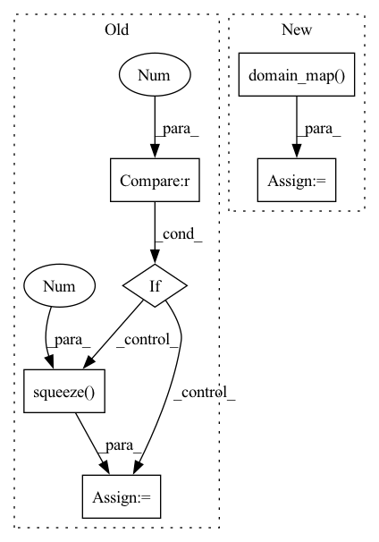

Pattern ID :26269

Before Change
return block_forecasts
else:
// Last dimension Adapter
if self.loss.outputsize_multiplier==1:
forecast = forecast.squeeze(-1)
return forecast
After Change
block_forecasts.append(block_forecast)
// Adapting output"s domain
forecast = self.loss.domain_map(forecast)
if self.decompose_forecast:
// (n_batch, n_blocks, h, output_size)
block_forecasts = torch.stack(block_forecasts)
In pattern: SUPERPATTERN
Frequency: 4
Non-data size: 6
Instances
Fragment ID: 79037998
Project Name: nixtla/neuralforecast
Commit Name: b9fb6390489436d1c16b805ac3cd8bcc5646c521
Time: 2022-11-24
Author: kin.gtz.olivares@gmail.com
File Name: neuralforecast/models/nhits.py
M Class Name: NHITS
N Class Name: NHITS
M Method Name: forward(2)
N Method Name: forward(2)
M Parent Class: BaseWindows
N Parent Class: BaseWindows
M File Name: neuralforecast/models/nhits.py
N File Name: neuralforecast/models/nhits.py
M Start Line: 318
M End Line: 333
N Start Line: 317
N End Line: 323
'>
Before Change
// Adapt output to loss
y_hat = self.output_adapter(temporal_features)
if self.loss.outputsize_multiplier==1:
y_hat = y_hat.squeeze(-1)
return y_hat
def training_step(self, batch, batch_idx):
After Change
// Adapt output to loss
y_hat = self.output_adapter(temporal_features)
y_hat = self.loss.domain_map(y_hat)
return y_hat
def training_step(self, batch, batch_idx):
'>
Fragment ID: 79037999
Project Name: nixtla/neuralforecast
Commit Name: f22bf6b6c9e16557938ceff48393befa938d3d43
Time: 2022-11-24
Author: kin.gtz.olivares@gmail.com
File Name: neuralforecast/models/tft.py
M Class Name: TFT
N Class Name: TFT
M Method Name: forward(2)
N Method Name: forward(2)
M Parent Class: BaseWindows
N Parent Class: BaseWindows
M File Name: neuralforecast/models/tft.py
N File Name: neuralforecast/models/tft.py
M Start Line: 538
M End Line: 542
N Start Line: 538
N End Line: 539
'>
Before Change
return block_forecasts
else:
// Last dimension Adapter
if self.loss.outputsize_multiplier==1:
forecast = forecast.squeeze(-1)
return forecast
After Change
block_forecasts.append(block_forecast)
// Adapting output"s domain
forecast = self.loss.domain_map(forecast)
if self.decompose_forecast:
// (n_batch, n_blocks, h, out_features)
'>
Fragment ID: 79037996
Project Name: nixtla/neuralforecast
Commit Name: b9fb6390489436d1c16b805ac3cd8bcc5646c521
Time: 2022-11-24
Author: kin.gtz.olivares@gmail.com
File Name: neuralforecast/models/nbeats.py
M Class Name: NBEATS
N Class Name: NBEATS
M Method Name: forward(2)
N Method Name: forward(2)
M Parent Class: BaseWindows
N Parent Class: BaseWindows
M File Name: neuralforecast/models/nbeats.py
N File Name: neuralforecast/models/nbeats.py
M Start Line: 289
M End Line: 304
N Start Line: 289
N End Line: 295
'>
Before Change
return block_forecasts
else:
// Last dimension Adapter
if self.loss.outputsize_multiplier==1:
forecast = forecast.squeeze(-1)
return forecast
After Change
block_forecasts.append(block_forecast)
// Adapting output"s domain
forecast = self.loss.domain_map(forecast)
if self.decompose_forecast:
// (n_batch, n_blocks, h)
'>
Fragment ID: 79037997
Project Name: nixtla/neuralforecast
Commit Name: b9fb6390489436d1c16b805ac3cd8bcc5646c521
Time: 2022-11-24
Author: kin.gtz.olivares@gmail.com
File Name: neuralforecast/models/nbeatsx.py
M Class Name: NBEATSx
N Class Name: NBEATSx
M Method Name: forward(2)
N Method Name: forward(2)
M Parent Class: BaseWindows
N Parent Class: BaseWindows
M File Name: neuralforecast/models/nbeatsx.py
N File Name: neuralforecast/models/nbeatsx.py
M Start Line: 347
M End Line: 362
N Start Line: 347
N End Line: 353